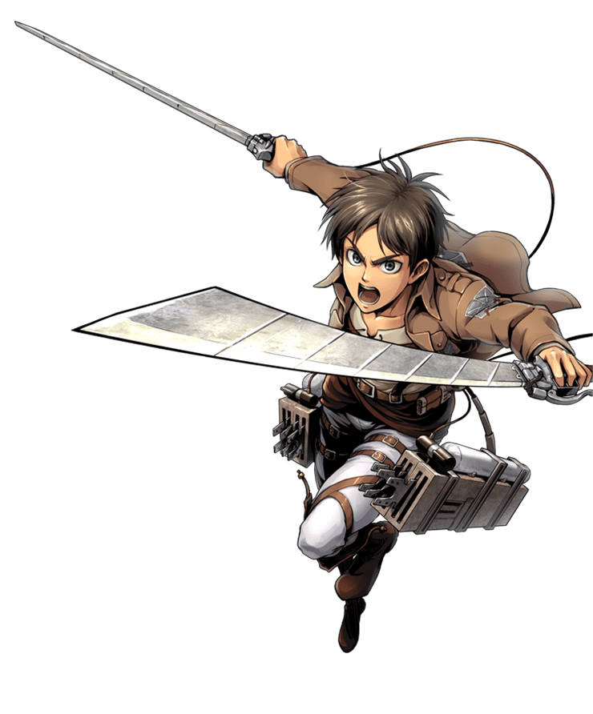
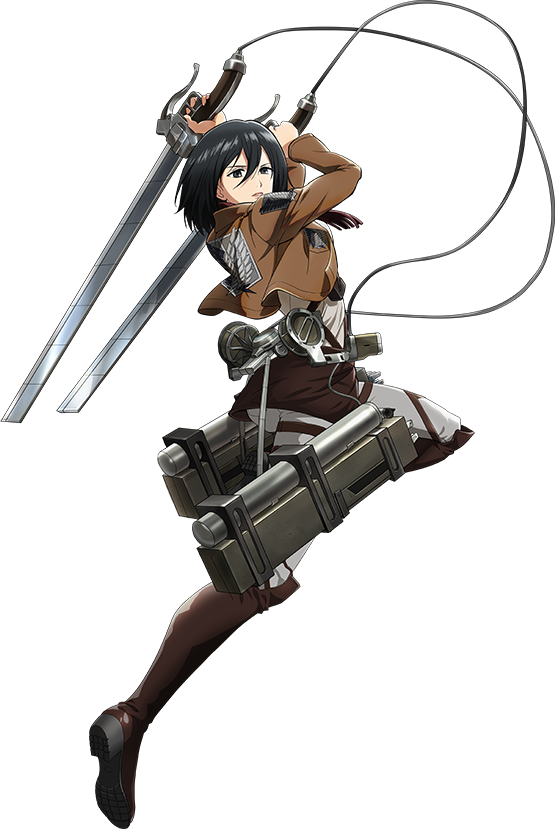
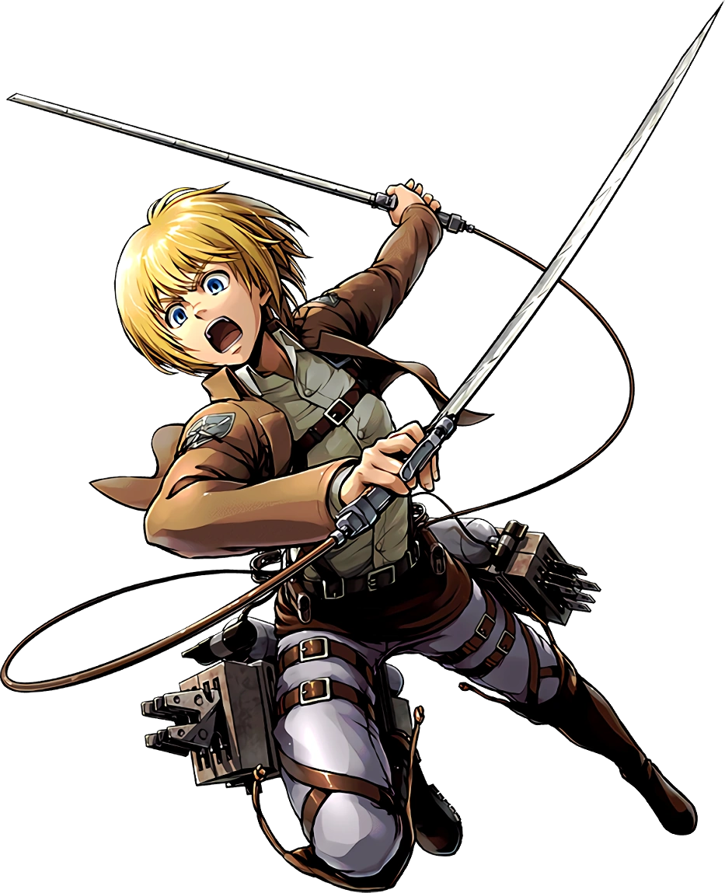
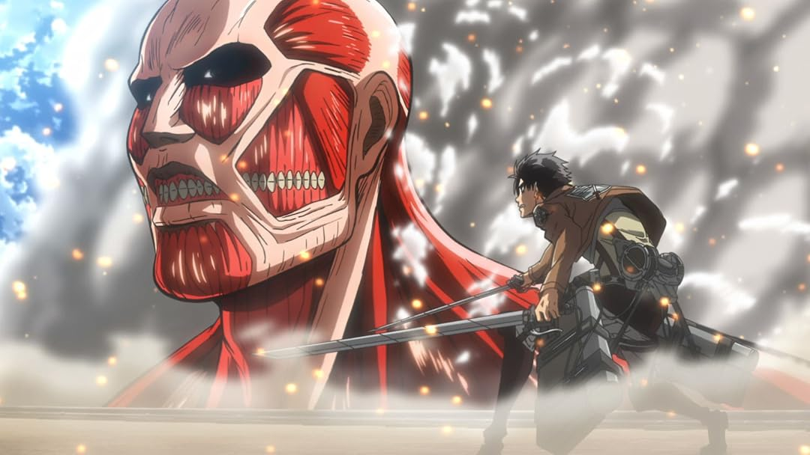
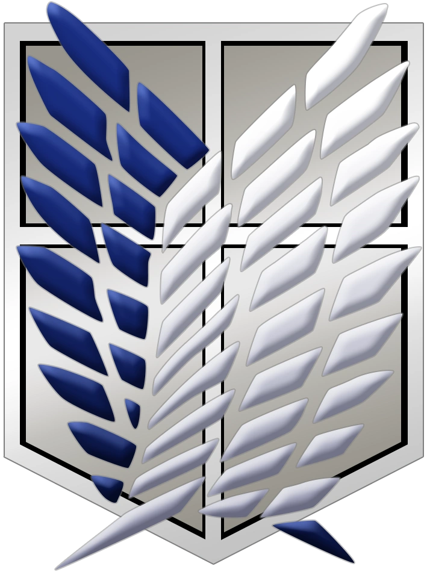
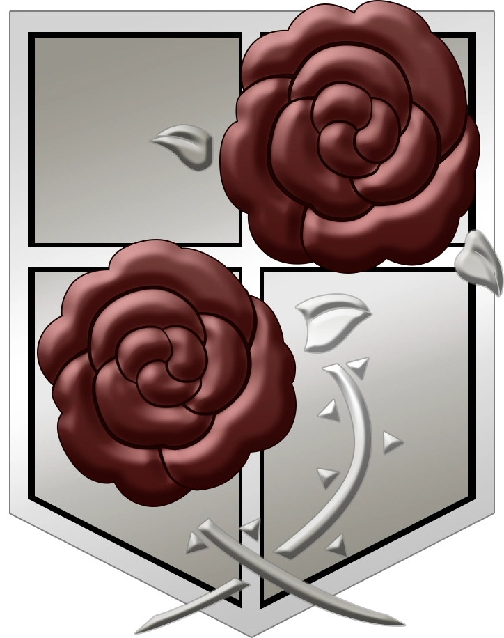

Attack on Titan
Az Attack on Titan, eredeti japán címén Shingeki no Kyojin, Hajime Isayama mangasorozata alapján készült anime, amely 2013-ban debütált. A történet egy olyan világban játszódik, ahol az emberiség hatalmas falak mögött él, hogy megvédje magát a titánoktól, az emberekre vadászó óriási lényektől.
A történet főszereplője Eren Yeager, aki gyermekkora óta szeretné megismerni a falakon túli világot. Élete azonban megváltozik, amikor egy titán áttöri a külső falat, és megtámadja szülővárosát, ami arra ösztönzi, hogy csatlakozzon a hadsereghez, és harcoljon a titánok ellen.
Barátaival, Mikasa Ackermannel és Armin Arlerttel együtt kezdi meg katonai szolgálatát. A kezdeti céljuk a titánok legyőzése és az emberiség megvédése, azonban a küldetéseik során egyre több olyan eseménnyel találkoznak, amelyek megkérdőjelezik mindazt, amit addig a világukról hittek.
Főbb karakterek

Eren Yeager
A történet főszereplője, akinek legnagyobb célja a szabadság elérése.

Mikasa Ackerman
Kivételes harcos, aki mindig megvédi azokat, akik fontosak számára.

Armin Arlert
Rendkívül intelligens karakter, aki stratégiai gondolkodásával segíti társait.
Az emberiség utolsó menedéke
Az anime világában az emberek három hatalmas fal által körülvett területen élnek. A falak neve Maria, Rose és Sina, amelyek koncentrikus körökben helyezkednek el. Ezek választják el az emberiség lakóhelyeit a titánok által uralt külvilágtól.
A külső fal, Maria, biztosítja a legnagyobb lakható területet. A Rose és a Sina falak további védelmi vonalat alkotnak, így egy esetleges támadás során az embereknek lehetőségük van visszavonulni a belsőbb területekre. A falakon belül városok, falvak és mezőgazdasági területek találhatók.
A falakon belüli társadalom szigorú rend szerint működik. A lakosság nagy része a mindennapi életével foglalkozik, míg a katonai alakulatok feladata a területek védelme. A falakon kívüli életet szinte mindenki veszélyesnek tartja, ezért csak kevesen vállalkoznak a felfedezésére.
A történet elején a falakat az emberiség biztonságának jelképeként ismerjük meg. Később azonban egyre több kérdés merül fel az eredetükkel és a valódi szerepükkel kapcsolatban. A falak mögött rejlő titkok az egész történet alakulására hatással vannak.

A titánok
A titánok az Attack on Titan történetének központi szereplői. Emberi alakra hasonlító, hatalmas méretű lények, amelyek elsősorban emberekre vadásznak. Megjelenésük és viselkedésük változatos, méretük pedig néhány métertől akár több tíz méterig terjedhet.
A legtöbb titán kiszámíthatatlanul mozog, és különösebb gondolkodás nélkül támad az emberekre. Testük képes gyorsan regenerálódni, ezért a katonák számára komoly kihívást jelent a legyőzésük. Egyetlen ismert gyenge pontjuk a tarkójuk hátsó része, amelynek megfelelő eltalálásával elpusztíthatók.
A titánok ellen a katonák speciális felszerelést, úgynevezett háromdimenziós manőverező felszerelést használnak. Ennek segítségével épületek és fák között mozoghatnak, így megfelelő sebességgel és szögből támadhatják meg a náluk jóval nagyobb ellenfeleket.
A katonai alakulatok

Felderítő Egység
A Felderítő Egység, más néven a Felderítő Légió, feladata a falakon kívüli területek felderítése és az emberiség lakóhelyének kiterjesztése. Katonái rendszeresen indulnak veszélyes expedíciókra, hogy információkat gyűjtsenek a titánokról és a külvilágról.
A három alakulat közül ők kerülnek a leggyakrabban közvetlen kapcsolatba a titánokkal. Jelképeik a Szabadság Szárnyai, amelyek a falakon túli világ felfedezését szimbolizálják.

Helyőrség
A Helyőrség legfontosabb feladata a három fal védelme és a lakosság biztonságának fenntartása. Katonái a falakon és azok környékén teljesítenek szolgálatot, valamint ellenőrzik a kapukat és a védelmi rendszereket.
Titántámadás esetén ők veszik fel elsőként a harcot, hogy megakadályozzák az ellenség további előrenyomulását. A Helyőrség katonái emellett segítenek a lakosság evakuálásában és a veszélyeztetett területek védelmében is.
Katonai Rendőrség
A Katonai Rendőrség feladata a belső falakon belüli rend fenntartása, a királyi család védelme és a társadalmi szabályok betartatása. Tagjai elsősorban a legbelső, Sina fal által körülvett területen szolgálnak.
Ebbe az alakulatba elsősorban a kiképzés során legjobb eredményt elérő katonák kerülhetnek. Szolgálatuk általában biztonságosabb, mint a Felderítő Egység vagy a Helyőrség tagjaié, ezért sok újonc ezt az alakulatot választja.